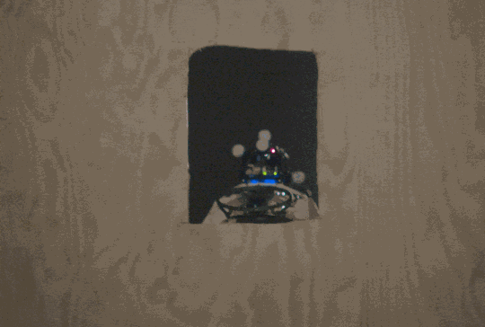

EMBODIED AI WEEKLY / 具身智能周报
具身智能前沿观察
2026年11月22日 · 全球具身智能情报精选

SIGNAL / 本周风向标
本周具身智能呈现出“应用跨界、资本加码、底层筑基”的三重趋势。一方面，人形机器人正加速脱离单一的汽车制造测试场景，向半导体等高精尖领域延伸；另一方面，单笔数亿美元的高额融资屡见不鲜，资金正快速向产能建设、灵巧操作与真实世界数据收集集中。与此同时，底层物理AI生态的安全防护也开始受到严苛检验。
BRIEF 01.01
物理AI生态安全警钟：安全机构两天内攻破具身智能基础软件暴露28个零日漏洞
网络安全公司VicOne利用人工智能辅助研究手段，针对支持物理AI（Physical AI）生态系统的关键软件与工具展开安全测试。
在不足两天的时间内，研究人员成功发现了28个零日漏洞，涵盖由谷歌、英伟达等科技巨头开发或维护的具身智能基础设施与开发项目。
影响解读
随着具身智能机器人加速从实验室走向物理世界，其底层基础设施与中间件的安全风险日益凸显。本次集中暴露的零日漏洞警示行业，在追求算法突破与物理控制能力的同时，必须将物理AI系统的原生安全防护提上日程。
信息来源：IEEE Spectrum Robotics
BRIEF 02.01
资本狂飙：思灵机器人与Genesis AI双双斩获5亿美元巨额融资
具身智能企业思灵机器人（Agile Robots）宣布完成5亿美元的新一轮融资，所筹资金将主要用于扩大其人形机器人、移动机器人及灵巧手的生产产能。
与此同时，专注于使机器人穿戴手套进行灵巧操作的Genesis AI也宣布完成5亿美元A轮融资，以推动电控灵巧手机器人的规模化部署。
影响解读
单笔5亿美元级别的巨额融资频现，表明资本市场对具身智能的投资逻辑正从概念验证转向规模化量产与真实场景部署。硬件产能与灵巧控制技术正在成为下一阶段竞逐的护城河。
信息来源：The Robot Report
BRIEF 02.02
新型微型变形无人机问世 可穿过狭窄缝隙拓展复杂空间搜救能力

▲ 图片来源：IEEE Spectrum Robotics
IEEE Spectrum公布了最新的机器人前沿突破，一款具备形态变更能力的四轴飞行器展示了其穿过极度狭窄空间的能力。
该微型无人机能够在飞行过程中自主调整机身形态，收紧机臂以顺利滑过木墙上的小矩形孔洞。
影响解读
形态可变性为具身智能终端在极端受限环境下的自主导航与避障开辟了新路径，在地震救援、管道检测等特种具身智能场景中展现出巨大应用潜力。
信息来源：IEEE Spectrum Robotics
BRIEF 03.01
波士顿动力Atlas突破汽车行业藩篱 首次挺进半导体制造工厂
波士顿动力（Boston Dynamics）旗下电动版Atlas人形机器人迎来了跨行业应用的关键突破。
根据官方规划，Atlas将于2027年初在一家大型半导体制造企业开展首次非汽车领域的真实场景试点测试。
影响解读
半导体制造对环境洁净度、操作精准度和物料搬运稳定性极低容错率。Atlas走出汽车车间迈入晶圆厂，标志着人形机器人在工业高精尖领域的商业落地迈出了具有决定性意义的跨步。
信息来源：The Robot Report
EDITOR'S PERSPECTIVE
从Atlas跨界半导体晶圆厂到5亿美元巨额融资落地，具身智能行业正经历从技术验证到工业级量产部署的深刻蜕变。半导体场景的高精度与高洁净度要求，将重新定义人形机器人的末端感知与控制标准。
物理AI生态集中暴露的零日漏洞为快速狂飙的具身智能行业敲响了警钟。具备物理实体交互能力的机器人一旦遭受系统级入侵，其安全风险将远远超出传统互联网领域，原生安全能力必须提升为行业标准要求。
EMBODIED AI WEEKLY · 持续观察具身智能最前沿